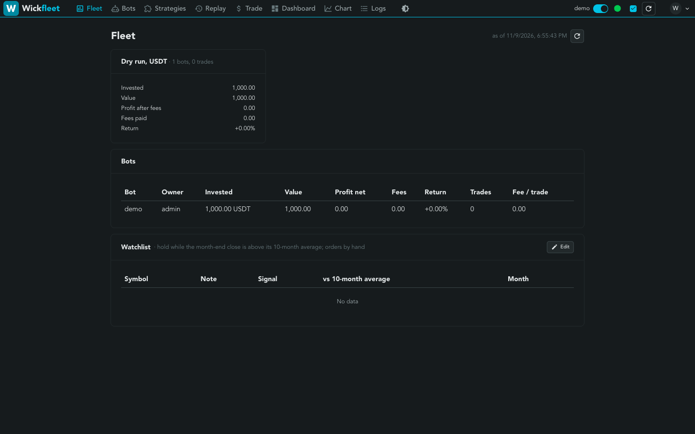
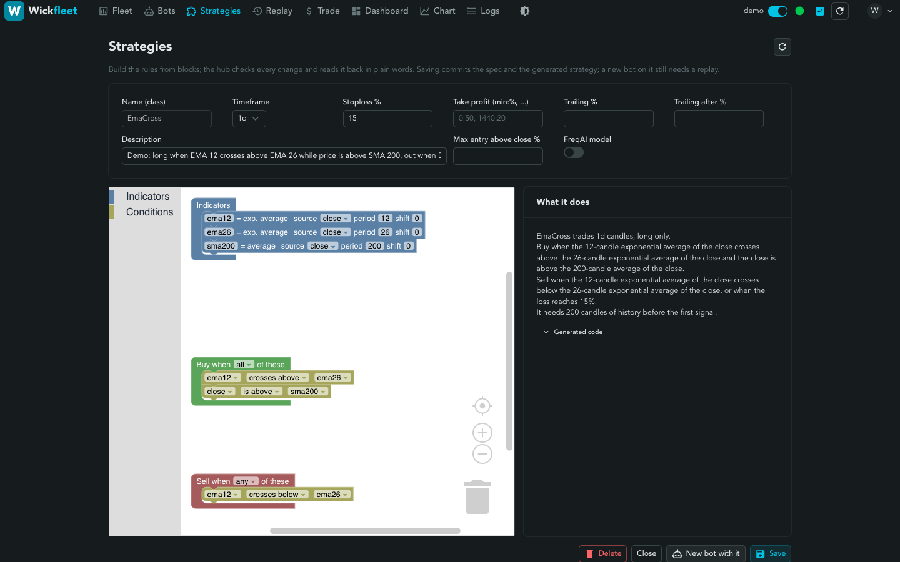
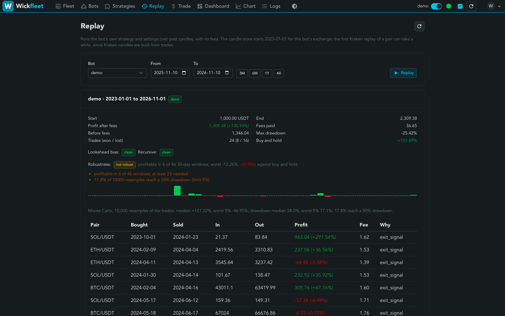
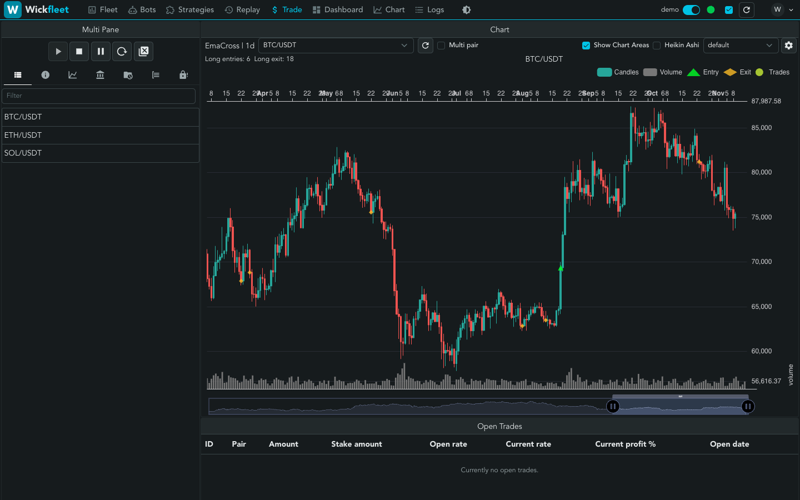
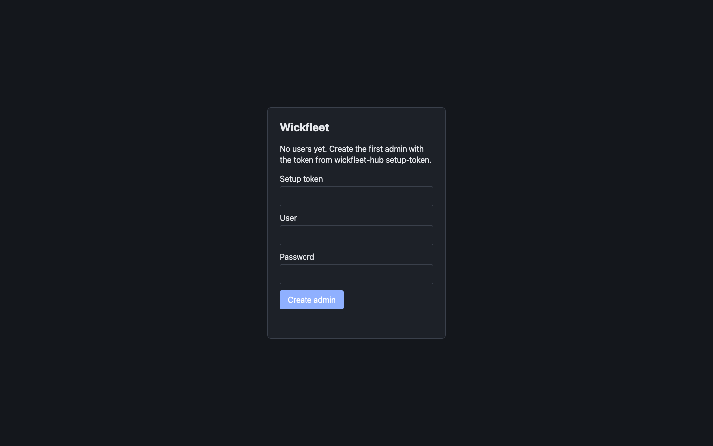

One browser UI for a fleet of Freqtrade bots.
- Strategies from blocks. Build rules without writing Python, read back in plain words before you save.
- Replay before it runs. Backtest any bot over past candles, with lookahead and robustness checks.
- No bot passwords. People log in once and get a role. Every bot runs in its own container behind one origin.

What it looks like




Quick start
Needs Docker with Compose v2, git and make, on macOS or Linux. Everything runs on one machine, bound to 127.0.0.1.
git clone https://github.com/wickfleet/wickfleet.git
cd wickfleet
make quickstartThe script prints a one-time setup token. Open http://localhost:8000/hub/login, create the first admin, and a dry-run demo bot is already waiting in the fleet.
Security model
- The browser never holds a bot API key. The hub adds it per request after checking role and ownership.
- The hub reaches Docker only through a guard that allows bot containers of listed images, users and paths, with every capability dropped.
- Login is the hub's own (argon2id, one-time first-admin token) or any OIDC provider through oauth2-proxy.
Found a vulnerability? Write to security@wickfleet.com.
Not financial advice
Wickfleet is software for running trading bots, not a recommendation to buy or sell anything. Backtests and replays describe the past, not the future. Every bot is a dry run on a simulated wallet by default. Live trading needs an explicit switch on the instance and on the bot, a recent passing replay, and exchange keys from files on your host. Turning it on is your decision, your money and your risk. No warranty.